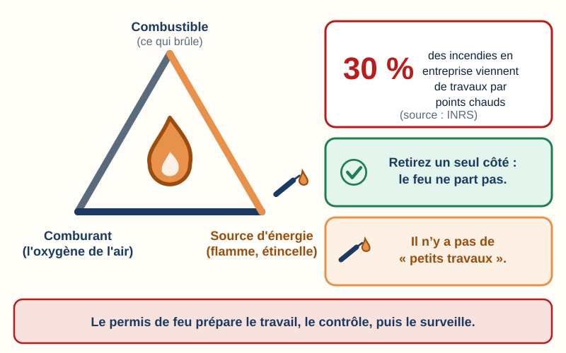
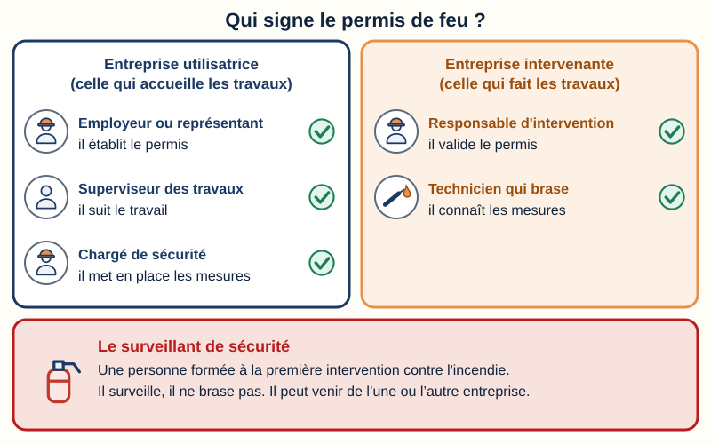
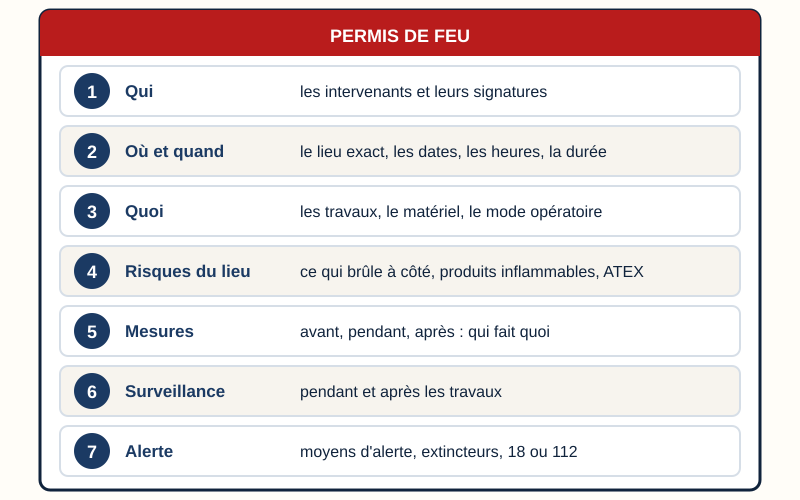
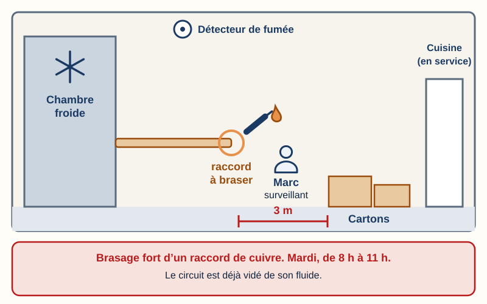
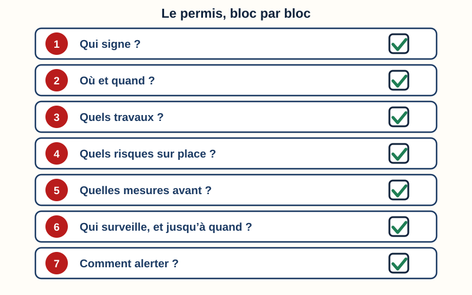
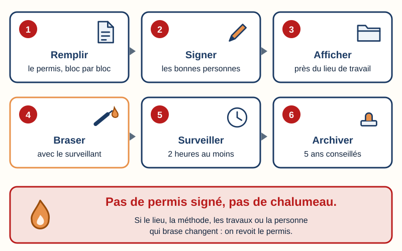
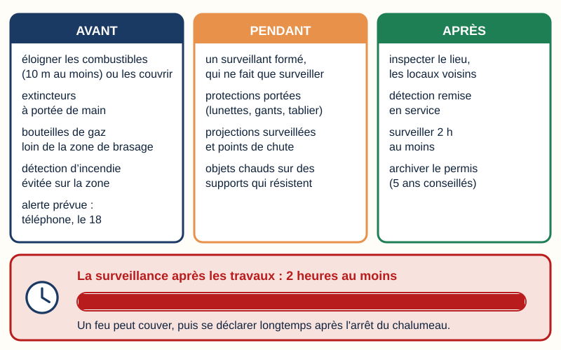

Mini-station commentée · 8 écrans et 4 questions · environ 10 minutes
Objectif
À la fin de la station, vous savez pourquoi on remplit un permis de feu avant de braser, qui le délivre, qui le signe, ce qu'il contient (zone, durée, risques, mesures avant, pendant et après, surveillance après les travaux) — et vous avez rempli vous-même un permis pour un brasage en chambre froide.
Sert notamment pour
CAP IFCA : savoir S1.2 « Pièces et autorisations administratives » · compétence C2.3 « Préparer les conditions d'intervention sur site »
Bac Pro MFER (2028) : savoir S1.4 « les procédures administratives »
Origine du réseau : TP TECVC, REAC TP-00133 — hors REAC (culture professionnelle du technicien et du chargé d'affaires). Attestation d'aptitude 2025 : code 10.01 (soudage, brasage fort et brasage tendre des joints étanches).
Chaque écran peut être expliqué à voix haute : le bouton « Écouter » commente ce que vous voyez. Rien n'est dit qui ne soit aussi écrit.
1 / 12
Écran 1 sur 8
Pourquoi un permis de feu ?
Pour qu'un feu parte, il faut trois choses en même temps : un combustible (ce qui brûle), un comburant (l'oxygène de l'air) et une source d'énergie (une flamme, une étincelle). On l'appelle le triangle du feu.
Quand vous brasez, vous apportez la troisième. C'est un travail par point chaud : un travail qui produit des étincelles ou des surfaces chaudes.
L'INRS (l'institut national de recherche et de sécurité, qui conseille les entreprises sur la prévention) écrit que plus de 30 % des incendies en entreprise viennent de travaux par points chauds, et qu'il n'y a pas de « petits travaux ».
À retenir
Le permis de feu est le papier qui prépare ce travail avant, le contrôle pendant et le surveille après.

Trois côtés réunis : le feu part. Un seul retiré : il ne part pas.
Écran 2 sur 8
Quels travaux, et par où le feu passe-t-il ?
Sont concernés : le brasage et le soudage, mais aussi le découpage, le meulage, le tronçonnage, le chalumeau, le laser. Les machines portatives tournantes (disqueuse, tronçonneuse) causent autant d'incendies que les chalumeaux (INRS).
Une exception : sur un poste de travail permanent (un poste de soudure fixe), le permis n'est pas nécessaire. Le risque est déjà dans l'évaluation des risques du poste (INRS).
Le feu a quatre chemins :
Les étincelles et les gouttes de métal : entre 1 000 et 2 000 °C, elles sont projetées à plusieurs mètres et se logent dans les fentes, les trous, le faux-plafond.
La conduction : la chaleur voyage le long d'un tube, d'une gaine, d'une paroi, et enflamme ce qui touche de l'autre côté, parfois dans la pièce voisine.
Les gaz chauds : ils montent et gagnent les niveaux du dessus.
Le contact ou le rayonnement : ce qui est près de la flamme et mal protégé s'enflamme.

Quatre chemins : étincelles, conduction, gaz chauds, contact.
Écran 3 sur 8
Qui délivre le permis, qui le signe ?
Le permis est établi par l'employeur ou son représentant (INRS, ED 6030). Deux mots à connaître : l'entreprise utilisatrice (EU) est celle chez qui on travaille ; l'entreprise intervenante (EI) est celle qui fait les travaux : la vôtre.
Côté entreprise utilisatrice
L'employeur ou son représentant établit le permis. Le superviseur des travaux assure le bon déroulement technique. Le chargé de sécurité met en place les mesures de sécurité.
Côté entreprise intervenante
Le responsable d'intervention assure le bon déroulement technique et la sécurité de l'intervention. Le technicien qui brase réalise le travail : il doit connaître les risques et les mesures avant de commencer.
Le surveillant de sécurité
Une personne formée à la première intervention contre l'incendie, avec ses moyens. Elle surveille et ne fait pas le travail. Elle peut venir de l'une ou l'autre entreprise.
Le permis est validé par les acteurs de l'entreprise utilisatrice et par le responsable d'intervention. Le technicien qui brase le signe aussi (modèle du CDG 45, le centre de gestion du Loiret). Chaque signataire garde une copie. Dans une petite entreprise, une même personne tient plusieurs rôles : au restaurant, le gérant tient les trois rôles de l'entreprise utilisatrice. Cela fait trois signatures : le gérant, le chef d'équipe, le technicien qui brase.
Un seul sens pour « opérateur »
L'INRS appelle « opérateur » la personne qui brase. Dans le Code de l'environnement, et dans les stations « Qui intervient sur une installation frigorifique ? », « Traçabilité » et « Les papiers du chantier », l'opérateur est l'entreprise attestée qui intervient. Ici, pour ne pas confondre, on dit « le technicien qui brase ».

Cinq coches : trois signatures dans un petit restaurant.
Écran 4 sur 8
Ce que contient un permis de feu
Qui : les intervenants, leurs coordonnées, leurs signatures.
Où et quand : le lieu exact, les dates et heures, la durée de validité.
Quoi : la nature des travaux, le type de travaux par points chauds, le matériel, le mode opératoire.
Risques du lieu : matériaux combustibles à proximité, produits inflammables, activité du voisinage (des personnes qui travaillent à côté : par exemple une cuisine en service), zone ATEX (atmosphère explosive).
Mesures : avant, pendant, après (écran suivant).
Surveillance : pendant les travaux, et après (qui, de quelle heure à quelle heure).
Alerte : moyens d'alerte (un téléphone chargé sur place), extincteurs à proximité, numéros à appeler : le 18 pour les sapeurs-pompiers, le 112 (numéro d'urgence européen).
Un permis ne dure pas
Sa durée est limitée et écrite dessus. Il doit être revu dès qu'un élément change : lieu, environnement, méthode, nature des travaux, intervenants (INRS) — par exemple un autre technicien qui reprend le chalumeau. Sur plusieurs jours, on vérifie sa validité chaque jour. Avec des équipes qui se relaient, on le valide à chaque changement de poste.

Sept blocs, de haut en bas : ce sont ceux du simulateur.
Écran 5 sur 8
Les mesures : avant, pendant, après
Avant
Éloigner les matières combustibles (chiffons, cartons, plastique, bois) à 10 m au moins du lieu de travail. Ce qu'on ne peut pas déplacer : le couvrir de bâches ignifugées (des bâches qui ne brûlent pas) (INRS). Pourquoi : les étincelles vont jusqu'à plusieurs mètres.
Mettre à portée de main des moyens d'extinction et d'alarme : au minimum un extincteur à eau de 9 litres et un extincteur adapté aux risques du local (INRS). Pourquoi : éteindre un début de feu tout de suite.
Placer les bouteilles de gaz le plus loin possible de la zone de brasage (INRS). Pourquoi : une bouteille qui chauffe peut exploser (fiche chalumeau du centre de gestion de la Manche, le « CDG 50 »).
Si le local a une détection ou une extinction automatique : éviter son déclenchement inutile en la limitant à la zone concernée, par exemple en isolant la boucle de détection de cette zone (la ligne de détecteurs reliée à la centrale d'alarme) (CDG 45). Si on la met hors service, prévoir des mesures au moins équivalentes, avec l'accord de l'assureur (INRS). Pourquoi : les fumées du brasage la déclencheraient pour rien.
Prévoir l'alerte : un téléphone chargé sur place et le numéro des sapeurs-pompiers, le 18 (ou le 112, numéro d'urgence européen). Pourquoi : plus les secours sont prévenus tôt, mieux le feu est maîtrisé.
Informer les personnes de la zone des mesures prises, et baliser. Pourquoi : pour que personne n'entre dans la zone ni n'y ajoute de matière qui brûle (INRS).
Pendant
Un surveillant de sécurité, formé à la première intervention contre l'incendie et doté de ses moyens. Le technicien qui brase ne peut pas surveiller : il est absorbé par son travail, et ses protections limitent sa vue (INRS).
Porter les équipements de protection individuelle (lunettes, gants, tablier).
Surveiller les projections incandescentes et leurs points de chute.
Poser les objets chauds sur des supports qui résistent à la chaleur.
Après
Inspecter le lieu, les locaux voisins et les abords.
S'assurer que la détection ou l'extinction automatique fonctionne de nouveau.
Surveiller 2 heures au moins après l'arrêt des travaux. Si c'est impossible, arrêter les travaux 2 heures au moins avant la fermeture de l'entreprise (INRS, CDG 45).
Archiver le permis : l'INRS conseille 5 ans.
Après les travaux, on ne part pas : on surveille 2 heures au moins.
Écran 6 sur 8
Le cas du jour : un brasage en chambre froide
Un restaurant fait remplacer le filtre déshydrateur (la pièce qui retient l'eau dans le circuit) de sa chambre froide. Vous allez braser un raccord sur la tuyauterie de cuivre. Le brasage fort assemble deux tubes avec un métal d'apport chauffé au chalumeau.
Avant de braser, le circuit est vidé de son fluide (récupération : station « Traçabilité »).
Le tube est balayé à l'azote pendant la chauffe, pour garder le cuivre propre à l'intérieur. L'azote ne brûle pas, mais il chasse l'oxygène : dans un local fermé, il peut priver l'air d'oxygène (INRS : « attention au risque d'anoxie »).
Les bouteilles de gaz se posent le plus loin possible de la zone de soudure (INRS).
À l'écran suivant, vous remplissez le permis pour ce cas. Relevez dès maintenant : le lieu, l'heure, les personnes, ce qui brûle à côté.

Chaque case du simulateur dépend de ce plan.
Écran 7 sur 8
Simulateur : remplissez le permis
La situation (un cas inventé)
Où : le local technique de la chambre froide d'un restaurant, derrière la cuisine. La cuisine reste en service.
Quand : mardi, de 8 h à 11 h.
Qui : le gérant du restaurant (l'employeur) ; Clim'Études Sud, avec un chef d'équipe (responsable d'intervention) et vous (le technicien qui brase) ; Marc, cuisinier formé à l'extincteur, peut surveiller.
Travaux : brasage fort d'un raccord sur la tuyauterie de cuivre, pour changer un filtre déshydrateur. Le circuit est déjà vidé de son fluide.
Autour : une pile de cartons à 3 m ; un détecteur de fumée au plafond ; dans la cuisine voisine, le personnel travaille. Aucun produit inflammable n'est stocké dans le local et il n'y a aucune zone ATEX.
Les blocs s'inspirent du permis de feu de l'INRS (brochure ED 6030, 2018) et du modèle du Centre de gestion du Loiret (CDG 45), mis à jour en novembre 2020 et réutilisable avec mention de la source. Ce permis d'entraînement ne remplace pas un vrai permis, qui se signe sur le site.

Sept blocs à remplir, de haut en bas.
Écran 8 sur 8
Bilan : la vie d’un permis de feu
Le permis de feu est obligatoire pour tous travaux par points chauds (INRS), sauf sur un poste de travail permanent.
Il est établi par l'employeur de l'entreprise utilisatrice, validé par le responsable d'intervention et signé aussi par le technicien qui brase : trois signatures dans un petit restaurant.
Il contient sept blocs : qui, où et quand, quoi, risques, mesures, surveillance, alerte.
On surveille 2 heures au moins après la fin des travaux.
On le revoit dès que le lieu, le technicien qui brase, la méthode ou les travaux changent.
Pas de permis signé, pas de chalumeau.

Six temps, une règle d’or.
Question 1 sur 4
Lequel de ces travaux est un « travail par point chaud » ?
Rappel de l'écran 2 — le chalumeau et les quatre chemins du feu.
Question 2 sur 4
Côté entreprise intervenante, qui valide le permis de feu avec les acteurs de l'entreprise utilisatrice ?
Rappel de l'écran 3 — cinq coches, dont celle du responsable d’intervention.
Question 3 sur 4
Les travaux sont finis. Pendant combien de temps faut-il surveiller le lieu, au moins ?

Rappel de l'écran 5 — la barre de la surveillance après travaux.
Question 4 sur 4
À mi-chantier, un autre technicien prend le chalumeau à votre place. Que devient le permis de feu ?
Rappel des écrans 4 et 8 — un permis se revoit dès qu’un élément change (lieu, méthode, travaux, intervenants).
Les correspondances de la station
Les papiers du chantier (sous-ligne Risques) — où le permis de feu s’insère parmi les autres papiers.
![Trois colonnes. Avant : éloigner les combustibles de 10 mètres au moins ou les couvrir, extincteurs à portée de main, bouteilles de gaz loin de la zone de brasage, détection d'incendie évitée sur la zone, alerte prévue avec un téléphone et le 18. Pendant : un surveillant formé qui ne fait que surveiller, protections portées, projections surveillées, objets chauds sur des supports qui résistent. Après : inspecter le lieu et les locaux voisins, remettre la détection en service, surveiller 2 heures au moins, archiver 5 ans. En bas, une barre qui grandit : surveillance de 2 heures au moins.](svg/avant-pendant-apres.svg)